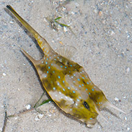
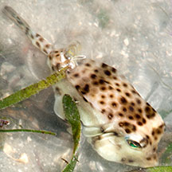
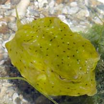

|
|
| fishes text index | photo index |
| Phylum Chordata > Subphylum Vertebrata > fishes |
| Boxfishes Family Ostraciidae updated Sep 2020
Where seen? These strange cube-like fishes are sometimes seen on some of our shores. What are boxfishes? Boxfishes belong to the Family Ostraciidae. According to FishBase: the family has 14 genera and 33 species found in the Atlantic, Indian and Pacific Oceans. Other similar fishes belong to different families include: pufferfishes which belong to Family Tetraodontidae, and porcupinefishes which belong to Family Diodontidae. Features: Adults of some species can reach 40-50cm. The boxfish is a slow moving fish that is hardly designed for fast swimming. However, if they are in a hurry, they can make a rapid dash. They get their common name from their cubical, boxy shape. Indeed, the body is basically a hard shell (carapace) made up of bony plates with gaps for the various tiny fins, the tail and the mouth. 'Ostrakon' means 'shell'. They are sometimes also called trunkfishes, or cowfishes because some have projecting 'horns' above their eyes. Some also have spines or angular ridges on their body. Toxic boxes: In addition to their strong body shell, some species secrete a powerful toxin on the skin (called ostracitoxin). This toxin is poisonous to other fishes and can even kill the boxfish itself if it is confined in an aquarium. Thus they are not recommended for aquariums. What do they eat? They graze on algae and immobile, encrusting animals using the small tube-like mouth which is low and usually faces downwards. There are small pointed teeth. It is reported that some feed by squirting a jet of water into sand to expose edible titbits. Boxy babies: These fishes form harems and are territorial. They spawn eggs which are released into the currents. |
| Some Boxfishes on Singapore shores |
 Longhorned cowfish |
 Shortnosed boxfish |
 Yellow boxfish |
| Family
Ostraciidae recorded for Singapore from Wee Y.C. and Peter K. L. Ng. 1994. A First Look at Biodiversity in Singapore. *from Lim, Kelvin K. P. & Jeffrey K. Y. Low, 1998. A Guide to the Common Marine Fishes of Singapore. **from WORMS +Other additions (Singapore Biodiversity Records, etc)
|
Links
References
|